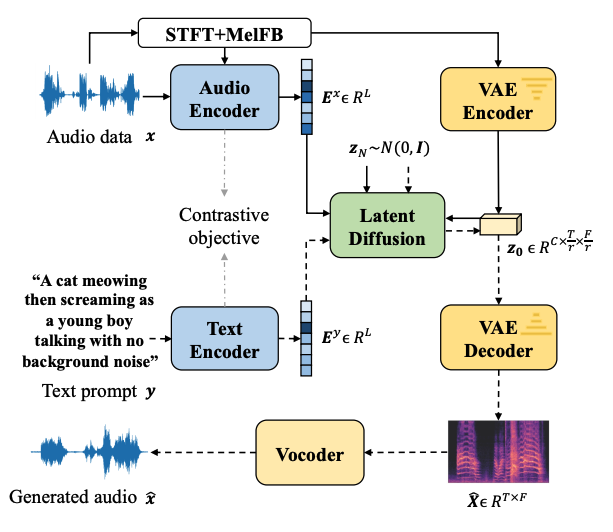

Lesson 5: Under the Hood of Real Audio AI (Architectures, Systems, and Ethics)
Over the previous four lessons, we developed each core component of the modern audio generation stack:
- Lesson 1: Converting physical air pressure into digital tensors via sampling, quantization, and the Short-Time Fourier Transform (STFT).
- Lesson 2: The divide between symbolic music recipes (MIDI/REMI event lists) and continuous acoustic records (PCM/Spectrograms).
- Lesson 3: Compressing high-rate waveforms into compact discrete token dictionaries using Neural Audio Codecs (EnCodec, DAC, SoundStream) and Residual Vector Quantization (RVQ).
- Lesson 4: Steering generative models using cross-attention conditioning (\(c\)) and Classifier-Free Guidance (CFG).
In this capstone lesson, we wire these components into complete production pipelines. We examine how state-of-the-art systems (like Meta's AudioCraft, Suno, Udio, and Stable Audio) generate full-length audio, compare autoregressive sequence modeling against continuous latent diffusion, analyze real-world serving constraints, and address the ethical and legal challenges of generative audio.
- 1. Sound as Waveforms & Spectrograms
- 2. Recipes (MIDI) vs. Records (Raw Audio)
- 3. Audio Tokens & Neural Codecs (EnCodec, SoundStream, DAC)
- 4. Conditioning Mechanisms: Steering Audio Models
- 5. Modern Architectures, Production Systems & Ethics (You are here)
1. End-to-End Tensor Shape Trace: Generating 10 Seconds of Audio
To understand how an autoregressive codec system (such as Meta's MusicGen) runs inference, track the exact tensor transformations across each stage:
1. User Text Prompt: "lo-fi guitar, chill rain" │ ▼ 2. Text Tokenizer: Tensor Shape: (L,) = (12,) [12 discrete subword token IDs] │ ▼ 3. Frozen Text Encoder (T5-Large): Tensor Shape: (L, d_text) = (12, 1024) [Continuous contextual embeddings] │ ▼ 4. Autoregressive Transformer Decoder: Processes F = 10s × 50 Hz = 500 frames across K = 4 residual codebooks. Total Autoregressive Decisions: 500 × 4 = 2,000 steps. At each step: Model outputs logits (V,) where V = 2048, sampled via Softmax + CFG. Output Discrete Tensor Shape: (F, K) = (500, 4) │ ▼ 5. Codebook Embedding Lookup & Hierarchical Sum: Each ID is mapped to its D = 128 continuous prototype vector and summed across K = 4 stages. Latent Grid Tensor Shape: (F, D) = (500, 128) │ ▼ 6. Neural Codec Decoder (Transposed Convolutions): Upsamples the (500, 128) latent grid by a total stride factor of 640. Output PCM Audio Waveform Shape: (T,) = (320,000,) float32 samples at 32 kHz.

Complete Pipeline Summary Table
| Stage | Mechanism | Input Representation & Shape | Output Representation & Shape |
|---|---|---|---|
| Prompt Processing | T5 Text Encoder | String: "lo-fi guitar..." | Continuous matrix: (12, 1024) |
| Sequence Generation | Transformer LM + Cross-Attn | Text Embeddings + Past Audio IDs | Discrete Token Matrix: (500, 4) |
| Acoustic Decoding | RVQ Codebook Lookup | Discrete Token Matrix: (500, 4) | Continuous Latent Grid: (500, 128) |
| Waveform Synthesis | Transposed Convolutions | Continuous Latent Grid: (500, 128) | 1D Floating-Point PCM: (320,000,) |
2. Autoregressive Codec LMs vs. Continuous Latent Diffusion
Modern commercial systems divide primarily into two architectural paradigms: Autoregressive Codec Models and Latent Diffusion Models.
Autoregressive Codec Path (MusicGen):
Text Prompt ──► [ T5 Encoder ] ──► [ AR Transformer ] ──► Discrete Tokens (F, K) ──► [ Codec Decoder ] ──► Waveform
Latent Diffusion Path (AudioLDM, Stable Audio):
Text Prompt ──► [ CLAP / T5 ] ──┐
▼
Gaussian Noise z_T ───────────► [ Diffusion Transformer / U-Net ] ──► Denoised Latent z_0 ──► [ Audio VAE / Vocoder ] ──► Waveform
(Iterative Denoising Loop: t = T...1)

1. Autoregressive Codec LMs (e.g., MusicGen)
- Core Concept: Flattens discrete RVQ codebook indices into an interleaved 1D sequence and samples tokens sequentially from left to right:
\[ P(a_1, a_2, \dots, a_N \mid \mathbf{c}) = \prod_{t=1}^{N} P(a_t \mid a_{<t}, \mathbf{c}) \]
- Advantages: Strong structural and melodic coherence over long horizons; natural handling of variable-length audio prompts and continuations.
- Bottlenecks: Inference is strictly serial. Generating 2,000 tokens requires 2,000 sequential forward passes through the network.
2. Latent Diffusion Models (e.g., AudioLDM 2, Stable Audio)
- Core Concept: Operates over a continuous 2D time-frequency latent space (e.g., continuous VAE latents derived from Mel-spectrograms). Generation starts with pure Gaussian noise \(z_T \sim \mathcal{N}(0, I)\) and iteratively removes noise over \(N_{\text{steps}}\) (typically 25–100 steps) conditioned on text embeddings \(c\):
\[ z_{t-1} = \text{DenoiseStep}(z_t, \mathbf{c}, t) \]
- Advantages: Non-autoregressive; updates the entire temporal grid simultaneously, allowing high parallelization on modern GPU hardware. Excels at complex, layered acoustic textures and high-fidelity stereo audio.
- Bottlenecks: Requires a dedicated vocoder or diffusion decoder to reconstruct phase and time-domain samples from spectrogram latents. Can struggle with rigid long-range musical structure (e.g., strict 32-bar verse-chorus transitions) without explicit structural conditioning.
Architectural Tradeoff Matrix
| Metric | Autoregressive Codec LM | Latent Diffusion Model |
|---|---|---|
| Primitive Unit | Discrete Codebook Tokens (\(V \approx 2048\)) | Continuous Latent Space (\(z \in \mathbb{R}^{T \times D}\)) |
| Inference Loop | Thousands of sequential steps (\(N \approx 2,000\)) | Dozens of full-tensor updates (\(N_{\text{steps}} \approx 25\text{–}100\)) |
| Computational Profile | Memory-bandwidth bound (KV-cache lookups) | Compute bound (massive matrix multiplications per step) |
| Musical Structure | Strong melodic progression and transition timing | Rich acoustic textures, complex ambient layering |
| Production Examples | Meta AudioCraft (MusicGen), Suno (assumed hybrid) | Stability AI (Stable Audio), AudioLDM 2 |
Toggle Codec+Transformer vs Diffusion, enter a prompt, and step through a cartoon of each production path (stand-in audio only — not a real model decode).
next audio tokens→ Codec decoder→ Waveform
3. Dissecting Production Platforms: Suno and Udio
Commercial music generators (such as Suno and Udio) wrap core generative engines inside specialized production scaffolding:
User Input (Lyrics + Style Tags)
│
├──────► [ Lyric Alignment & Phoneme Parser ]
│ │
│ ▼
├──────► [ Multi-Modal Condition Aggregator ] (Cross-Attention Embeddings)
│ │
│ ▼
└──────► [ Hierarchical Generator ] (AR / Diffusion Backbone)
│
▼
[ Multi-Track Stems / Codec Latents ]
│
▼
[ Neural Vocoder + DSP Mastering Pipeline ] (Stereo Widening, Dynamic EQ)
│
▼
Final Mastered Audio Stream (.mp3 / .wav)
Key Functional Components
- Lyric and Vocal Alignment: Models use an internal phoneme tokenizer or text-to-speech alignment head to synchronize vocal synthesis with tempo, ensuring words align with the underlying harmonic progression.
- Audio Extension & Inpainting: Users can select arbitrary boundaries in a generated track to extend the song or regenerate a specific section (e.g., replacing a guitar solo). This is implemented via masked latent inpainting in diffusion models or audio-prefix caching in autoregressive models.
- Post-Processing & Mastering: Raw neural network outputs often lack dynamic range or high-frequency stereo clarity. Production stacks run the decoded audio through multi-band compressors, stereo wideners, and limiters to match commercial streaming standards.
4. Serving Realities: Latency, KV-Caching, and Streaming
Deploying audio models in real-time applications (such as interactive gaming or live DAWs) introduces strict serving constraints:
1. The Autoregressive Latency Challenge
A 10-second MusicGen generation requires 2,000 sequential token predictions.
- If a forward pass on a server GPU takes \(15\text{ ms}\), total generation time is:
\[ 2,000 \times 0.015\text{ s} = \mathbf{30\text{ seconds of compute (3× slower than real-time)}} \]
2. Engineering Optimizations
- Key-Value (KV) Caching: Stores past attention states (\(K, V\)) in GPU VRAM, preventing the network from recomputing historical context at each step.
- Kernel Fusion (e.g., FlashAttention): Reduces memory-bandwidth bottlenecks during attention computations.
- Streaming Audio Chunking: Instead of waiting for the full 2,000-token sequence to finish, the server decodes tokens into audio chunks in rolling windows (e.g., every 50 frames / 1 second) and streams them to the user buffer.
5. Ethical, Legal, and Societal Implications
Generative audio systems raise complex legal and ethical questions regarding dataset sourcing, artistic attribution, and identity rights:
Training Distribution (Scraped Web Audio / Commercial Tracks)
│
▼
[ Deep Neural Encoder & Tokenizer ] ──► Model Weights Store Acoustic & Stylistic Priors
│
▼
Downstream Generation Risks:
1. Direct Style Mimicry ("In the style of [Artist]") ──► Economic substitution
2. Vocal Cloning & Impersonation ──► Identity theft, non-consensual deepfakes
3. Verbatim Dataset Memorization ──► Copyright infringement (substantial similarity)
1. Training Provenance and Copyright
Neural codecs and generative backbones are trained on tens of thousands of hours of copyrighted recordings. While model weights do not store audio files directly, they store statistical representations that can reproduce artist-specific timbres, harmonic progressions, and vocal styles. This has led to active litigation over whether training generative audio models constitutes fair use.
2. Voice Cloning and Identity Protection
Conditioning models on short reference audio clips enables zero-shot vocal cloning. Without strict guardrails, this enables non-consensual impersonation, fraudulent authorizations, and deceptive media.
3. Mitigation Strategies in Production
- Style and Name Filtering: Reject prompts containing names of living artists to prevent targeted style mimicry.
- Acoustic Watermarking: Embed imperceptible high-frequency or latent-space watermarks (e.g., AudioSeal) directly into generated audio to allow automated provenance detection.
- Opt-In / Licensed Training Data: Train foundation models exclusively on ethically sourced, public-domain, or commercially licensed libraries.
Knowledge Verification
Question: You deploy an autoregressive music generation pipeline using a \(32\text{ kHz}\) neural codec with a framing rate of \(50\text{ Hz}\) and \(K = 4\) codebooks (\(V = 2,048\)). A user inputs a prompt and requests 15 seconds of audio.
- What is the total length of the generated discrete token sequence?
- What is the shape of the continuous latent matrix before passing into the codec decoder?
- Exactly how many floating-point samples will make up the final uncompressed mono PCM waveform?
Show answer
- Frames to generate \(= 15\text{ s} \times 50\text{ frames/s} = \mathbf{750\text{ frames}}\). Total tokens \(= 750\text{ frames} \times 4\text{ codebooks} = \mathbf{3,000\text{ discrete tokens}}\).
- Latent matrix shape:
(750, 128)(assuming standard embedding dimension \(D = 128\)). - Final output samples \(= 15\text{ s} \times 32,000\text{ samples/s} = \mathbf{480,000\text{ samples}}\) (PCM tensor of shape
(480000,)).
Question: Compare generating a 10-second audio track across two backends:
- Backend A (Autoregressive): 2,000 sequential token steps. GPU execution with KV-caching achieves an average of \(6\text{ ms}\) per step.
- Backend B (Latent Diffusion): 50 iterative denoising steps. Each step computes a full-tensor update across the latent grid, taking \(180\text{ ms}\) per step.
Which backend finishes generation faster, and by how much?
Show answer
- Backend A Latency \(= 2,000\text{ steps} \times 0.006\text{ s} = \mathbf{12.0\text{ seconds}}\).
- Backend B Latency \(= 50\text{ steps} \times 0.180\text{ s} = \mathbf{9.0\text{ seconds}}\).
- Verdict: Backend B (Diffusion) finishes faster by \(3.0\text{ seconds}\) (\(9.0\text{ s}\) vs. \(12.0\text{ s}\)).
Course Summary: The Complete Mental Model
Across this unit, we have connected the physics of sound to modern generative architectures:
- The Physical Wave: Sound is physical air pressure, represented as a 1D sequence of amplitude samples measured at sample rate \(f_s\).
- The Frequency Prism: The STFT uses sliding window FFTs to convert 1D waveforms into 2D time-frequency spectrograms, bounded by the time-frequency uncertainty principle.
- The Discrete Bottleneck: Neural Audio Codecs downsample waveforms to low frame rates (\(50\text{ Hz}\)) and use Residual Vector Quantization (RVQ) to produce compact discrete token grids.
- Targeted Conditioning: Cross-attention and Classifier-Free Guidance (CFG) steer the pre-Softmax logits toward user prompts and reference audio.
- Production Synthesis: Modern systems combine autoregressive Transformers or latent diffusion backbones with neural decoders to output production-ready audio.
- Meta AudioCraft blog — MusicGen / EnCodec overview
- AudioCraft repository
- Stable Audio / AudioLDM papers — continuous latent diffusion for audio